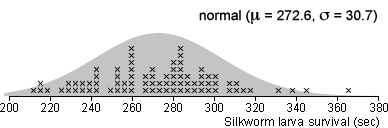

Silkworm survival after dose of arsenic
Upper quartile of survival times from 80 silkworm larvae = 292 sec
Normal approximation

Simulation
Use this page to explain how a simulation can give the approximate standard error for an estimator when no formula is available.
In this case, we are estimating an upper quartile and samples are simulated from a normal distribution that is probably close to the population distn. The upper quartile for this normal distribution is 293.3, so we can find the estimation error from any sample and build up the error distribution.
Click Accumulate then take 100 or more samples to build the error distribution (hold down the Take sample button). Then click Estimate s.e. and bias.
From the simulation, the error in our estimate of the population upper quartile, 292 sec, is likely to be less than 8 sec and will almost certainly be less than 12 sec.
Silkworms must be killed after spinning their cocoons since the silk is damaged when the moths break free. Heat is often used to kill the caterpillars, but researchers performed experiments to investigate the toxic action of arsenic. As part of their research, the survival time of fourth-instar silkworm larvae weighing between 0.41 and 0.45 grams was examined after they were given 0.10 mg of sodium arsenate per gram of body weight.